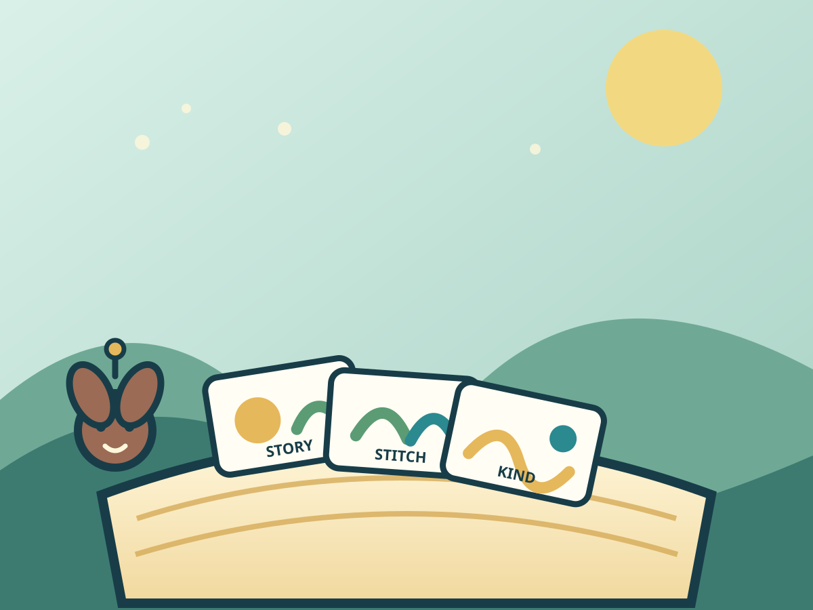

A gentle story puzzleMeadow story loom
Story Stitch
Put three picture clues in the order that makes the kindest little story.
Three tales readyRead, reorder, and stitch each little story.
Best: —
Warming the story loom…

A gentle story puzzleMeadow story loom
Put three picture clues in the order that makes the kindest little story.
Best: —
Read the three clues, move them into a cause-and-effect order, then stitch the tale. A wrong stitch gives you a gentle retry.
Story shelf
Tale
Tale finished